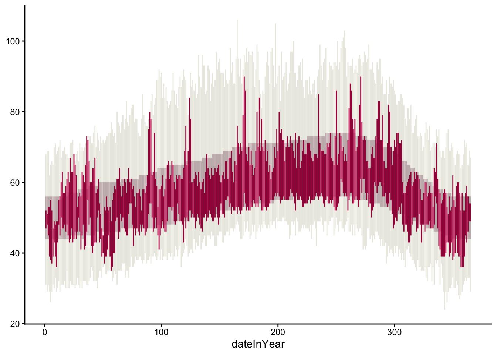
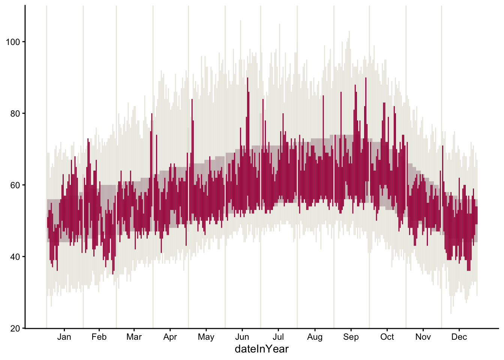
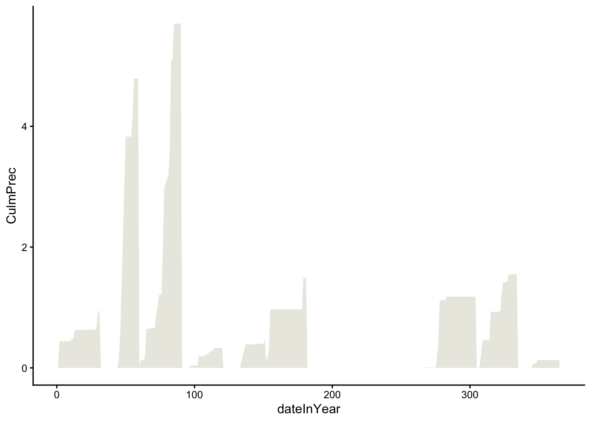
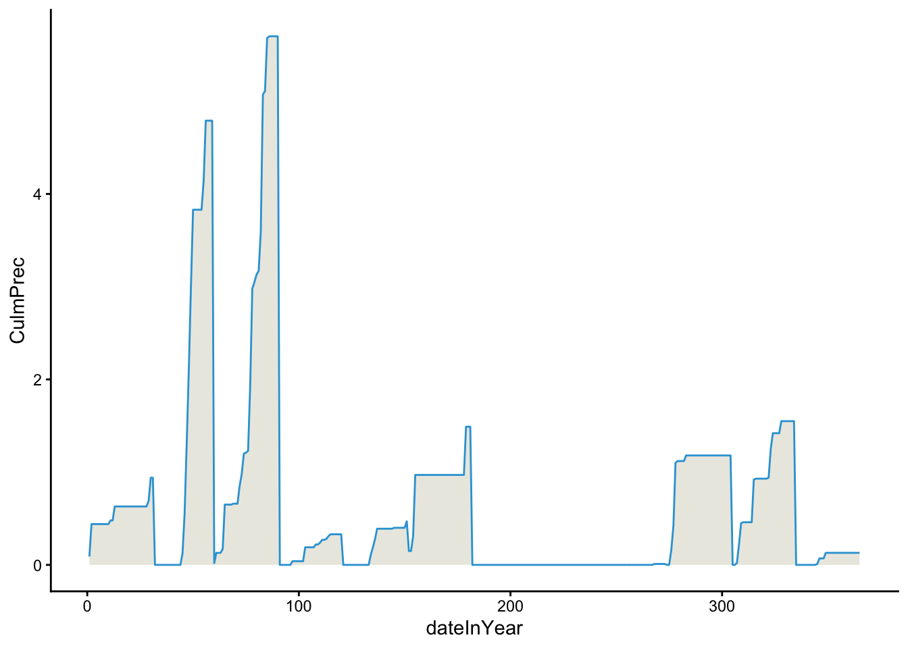

3 Adv Data Viz
🧩 Learning Goals
By the end of this lesson, you should be able to:
- Navigate
ggplot2reference page to find needed functions for a desired visualization - Navigate the different sections of a function help page to construct desired plot features, in particular,
- Navigate the Usage section to identify arguments that must be set
- Navigate the Arguments section to understand how arguments work
- Navigate the Aesthetics section to learn how plot appearance can be controlled
- Navigate the Examples section for some usage examples
- Identify when to use different
dataarguments withinggplot()andgeom_()layers
Introduction 1
In this lesson, we are going to recreate NYTimes 2015 Temperature Visualization (html) using data from San Francisco (SFO) in 2011.

Reading Data
Run the code chunk below to load the tidyverse package and read in the San Francisco weather data.
Understanding Data
Below is the codebook of the data. Familiarize yourself with the meaning of each variable. Use the codebook as a reference when using the data.
-
Month: Month of the year (1-12) -
Day: Day within the month (1-31) -
Low/High: Low/high temperature this day -
NormalLow/NormalHigh: Typical low/high temperature for this day of the year -
RecordLow/RecordHigh: Record low/high temperature for this day of the year -
LowYr/HighYr: Year in which the record low/high was observed -
Precip: Amount of precipitation (inches) this day -
RecordPrecip: Record amount of precipitation for this day of the year -
PrecipYr: Year in which the record precipitation was observed -
date: The actual date in 2011 for this day in YYYY-MM-DD format -
dateInYear: What day of the year is it? (1-365) -
Record: Logical (TRUE/FALSE) indicating whether this day had a high temperature record -
RecordText: Text that displays the record high for this day ("Record high: ##") -
RecordP: Logical (TRUE/FALSE) indicating whether this day had a precipitation record -
CulmPrec: Cumulative precipitation for the month up to this day
Exercise 1
Examine the NYTimes 2015 Temperature Visualization (html) then answer the following questions.
Data Storytelling
-
Relate the intro paragraph: “Scientists declared that 2015 was Earth’s hottest year on record…” to the design of the visualization. In particular, based on the intro paragraph,
- What key message/claim does NYTimes want readers to be able to explore?
They want readers to be able to explore the relative difference in heat from other years and how much warmer your city was in 2015.
- How did this goal inform what information is displayed in the visualization?
Aesthetic Mapping
What specific variables (from the data codebook) underlie the visualization?
Month: Month of the year (1-12)NormalLow/NormalHigh: Typical low/high temperature for this day of the yearRecordLow/RecordHigh: Record low/high temperature for this day of the yearLowYr/HighYr: Year in which the record low/high was observedPrecip: Amount of precipitation (inches) this dayRecordPrecip: Record amount of precipitation for this day of the yearPrecipYr: Year in which the record precipitation was observeCulmPrec: Cumulative precipitation for the month up to this dayHow do these variables map to aesthetics of the visual elements, eg, position, size, shape, and color of glyphs?
Exercise 2
Navigate the Geoms section of the ggplot2 reference page to find a geom that corresponds to the visual elements in the temperature plot. Using both the small thumbnail visuals on the right and the names of the geom’s, brainstorm some possibilities for geom’s you might use to recreate the temperature visualization.
You need to navigate the geoms further by opening up their reference pages to understand if a particular geom is suitable for our task. Let’s look at the geom_point documentation page to learn how to read a documentation page..
The Usage section shows all of the possible inputs (arguments) to the geom. These are all of the ways that a geom can be customized. Just looking at the argument names can help give a hint as to what arguments might fit our needs.
The Arguments section, on the other hand, explains in detail what each argument does and the possible values the argument can take. The mapping, data, and ... arguments will be the most commonly used by far.
-
mappingis the argument that is being used when we specify which variables should link or map to the plotaesthetics (the code insideaes()). -
datais the argument where we specify the dataset containing the variables that thegeomis using. -
...is used for fixed aesthetics (ones that don’t correspond to a variable), eg, to set the color of all points, we usecolor = "red"and to set the size of all points, we usesize = 3.
The Aesthetics section of a geom documentation page gives information on how the visual elements of the geom correspond to data. For example, the geom_point documentation page shows that x and y aesthetics are available. It also shows some new aesthetics like stroke.
data Argument
Previously you have used one dataset per plot by specifying that as the first argument of ggplot(). However, multiple data sets can be passed into ggplot as shown in the example below.
Code
data(diamonds)
diamonds_avg_price <- diamonds |>
group_by(carat) |>
summarize(avg_price = mean(price)) |>
arrange(carat)
diamonds_avg_price <- diamonds_avg_price[seq(1, nrow(diamonds_avg_price), 3), ]
ggplot(diamonds, aes(x = carat, y = price)) +
geom_point() +
geom_point(
data = diamonds_avg_price,
aes(x = carat, y = avg_price),
color = "deepskyblue",
size = 3
)
Look at the geom_linerange documentation page and start off your temperature visualization with the record lows and highs. Your plot should look like the one below. The hex code of the used light tan color is #ECEBE3.

Code

As you work on this plot, try to use some new keyboard shortcuts. Focus on the following:
- Insert code chunk:
Ctrl+Alt+I(Windows).Option+Command+I(Mac). - Run current code chunk:
Ctrl+Shift+Enter(Windows).Command+Shift+Return(Mac). - Run current line/currently selected lines:
Ctrl+Enter(Windows).Command+Return(Mac).
Exercise 3
In your visualization, also display the usual temperatures (NormalLow and NormalHigh) and actual 2011 temperatures (Low and High). Your plot should look like the one below. The hex code of the color used for the usual temperatures is "#C8B8BA" and for the color used for actual temperatures is "#A90248".

Code

If you’d like finer control of the width of these lines/rectangles, check out the geom_rect documentation page.
Exercise 4
Recreate the visual demarcations of the months by adding vertical lines separating the months. Brainstorm how we might draw those vertical lines. What geom might we use? What subset of the data might we use in that geom layer to draw lines only at the month divisions?
Code
month_lines <- weather |>
group_by(Month) |>
summarize(dateInYear = min(dateInYear))
ggplot(weather) +
theme_classic() +
aes(x = dateInYear) +
geom_linerange(
aes(ymin = RecordLow, ymax = RecordHigh),
color = "#ECEBE3"
) +
geom_linerange(
aes(ymin = NormalLow, ymax = NormalHigh),
color = "#C8B8BA"
) +
geom_linerange(
aes(ymin = Low, ymax = High),
color = "#A90248"
) +
geom_vline(
data = month_lines,
aes(xintercept = dateInYear),
color = "#ECEBE3")Exercise 5
Change the x-axis labels so that the month names display in the center of each month’s slice of the plot.
R has built-in variables called month.abb and month.name that contain abbreviated and full month names.
Try to figuring out this new challenge using search engines and LLMs:
Search Engines. Use Google to search for possible solutions using the jargon that is most likely to return the most relevant results. Record search queries and your thought process in selecting which search results to look at first.
LLMs. Use ChatGPT or Gemini with prompts that will most efficiently get you the desired results. Record the chat prompts used and output given. Evaluate the output. Do you fully understand the code generated? How can you tell that the generated code is correct?
Code
<ScaleContinuousPosition>
Range:
Limits: 0 -- 1Code
ggplot(weather) +
theme_classic() +
aes(x = dateInYear) +
geom_linerange(
aes(ymin = RecordLow, ymax = RecordHigh),
color = "#ECEBE3"
) +
geom_linerange(
aes(ymin = NormalLow, ymax = NormalHigh),
color = "#C8B8BA"
) +
geom_linerange(
aes(ymin = Low, ymax = High),
color = "#A90248"
) +
# your month divider lines
geom_vline(
data = month_lines,
aes(xintercept = dateInYear),
color = "#ECEBE3"
) +
scale_x_continuous(
breaks = month_centers$dateInYear,
labels = month.abb
)
Exercise 6
Create a precipitation plot that looks like the following. Note that
- The triangles point to precipitation records–refer to the data codebook above for the
RecordPvariable. - The numbers on the plot indicate the total precipitation for the month–search the
hjustandvjustoptions to adjust the alignment of the numbers. - The blue and tan colors hex codes are
"#32a3d8"and"#ebeae2", respectively.

Code

geom_line: na.rm = FALSE, orientation = NA, arrow = NULL, arrow.fill = NULL, lineend = butt, linejoin = round, linemitre = 10
stat_identity: na.rm = FALSE
position_identity Code

Code
mapping: x = ~dateInYear, y = ~CulmPrec
geom_point: na.rm = FALSE
stat_identity: na.rm = FALSE
position_identity Code
mapping: x = ~dateInYear, y = 0, label = ~total
geom_text: na.rm = FALSE, parse = FALSE, check_overlap = FALSE, size.unit = mm
stat_identity: na.rm = FALSE
position_nudge Done!
- Check the ICA Instructions for how to (a) push your code to GitHub and (b) update your portfolio website
The exercise in this lesson are inspired by an assignment from the Concepts in Computing with Data course at UC Berkeley taught by Dr. Deborah Nolan.↩︎